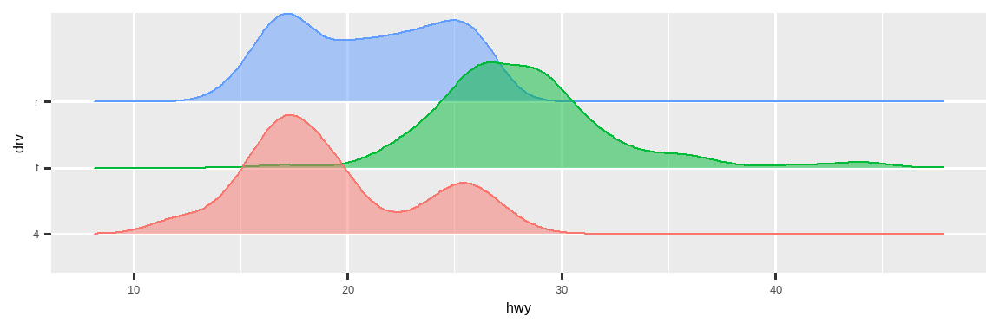

9 图层
9.1 引言
在 Chapter 1 中，你学到的远不止如何制作散点图、条形图和箱线图。你学到了一个基础，可以用它来通过 ggplot2 制作任何类型的图表。
本章中，你将在学习图形的分层语法时扩展这一基础。我们将从更深入地探讨图形属性映射 (aesthetic mappings)、几何对象 (geometric objects) 和分面 (facets) 开始。然后，你将学习 ggplot2 在创建图表时在幕后进行的统计变换 (statistical transformations)。这些变换用于计算要绘制的新值，例如条形图中条形的高度或箱线图中的中位数。你还将学习位置调整 (position adjustments)，它会修改几何对象在图中的显示方式。最后，我们将简要介绍坐标系。
我们不会涵盖这些图层中每一个的全部函数和选项，但我们会引导你了解 ggplot2 提供的最重要和最常用的功能，并向你介绍扩展 ggplot2 的包。
9.1.1 前提条件
本章重点介绍 ggplot2。要访问本章中使用的数据集、帮助页面和函数，请运行以下代码加载 tidyverse：
9.2 图形属性映射
“图片的最大价值在于，它迫使我们注意到我们从未预料会看到的东西。” — John Tukey
请记住，ggplot2 包中附带的 mpg 数据框包含 234 条关于 38 种车型的观测数据。
mpg
#> # A tibble: 234 × 11
#> manufacturer model displ year cyl trans drv cty hwy fl
#> <chr> <chr> <dbl> <int> <int> <chr> <chr> <int> <int> <chr>
#> 1 audi a4 1.8 1999 4 auto(l5) f 18 29 p
#> 2 audi a4 1.8 1999 4 manual(m5) f 21 29 p
#> 3 audi a4 2 2008 4 manual(m6) f 20 31 p
#> 4 audi a4 2 2008 4 auto(av) f 21 30 p
#> 5 audi a4 2.8 1999 6 auto(l5) f 16 26 p
#> 6 audi a4 2.8 1999 6 manual(m5) f 18 26 p
#> # ℹ 228 more rows
#> # ℹ 1 more variable: class <chr>mpg 中的变量包括：
displ：汽车的发动机尺寸，单位是升 (liters)。这是一个数值变量。hwy：汽车在高速公路上的燃油效率，单位是每加仑英里数 (miles per gallon, mpg)。燃油效率低的汽车在行驶相同距离时比燃油效率高的汽车消耗更多的燃料。这是一个数值变量。class：汽车的类型。这是一个分类变量。
我们先从可视化不同 class 的汽车中 displ 和 hwy 之间的关系开始。我们可以用一个散点图来做到这一点，其中数值变量被映射到 x 和 y 图形属性，而分类变量被映射到像 color 或 shape 这样的图形属性。
# 左
ggplot(mpg, aes(x = displ, y = hwy, color = class)) +
geom_point()
# 右
ggplot(mpg, aes(x = displ, y = hwy, shape = class)) +
geom_point()
#> Warning: The shape palette can deal with a maximum of 6 discrete values because more
#> than 6 becomes difficult to discriminate
#> ℹ you have requested 7 values. Consider specifying shapes manually if you
#> need that many of them.
#> Warning: Removed 62 rows containing missing values or values outside the scale range
#> (`geom_point()`).
当 class 被映射到 shape 时，我们会收到两条警告：
1: The shape palette can deal with a maximum of 6 discrete values because more than 6 becomes difficult to discriminate; you have 7. Consider specifying shapes manually if you must have them. (形状调色板最多只能处理 6 个离散值，因为超过 6 个就很难区分了；而你有 7 个。如果必须使用，请考虑手动指定形状。)
2: Removed 62 rows containing missing values (
geom_point()). (移除了 62 行包含缺失值的记录 (geom_point()))
由于 ggplot2 默认一次只使用六种形状，当你使用形状属性时，额外的组将不会被绘制。第二条警告与此相关——数据集中有 62 辆 SUV 没有被绘制出来。
类似地，我们也可以将 class 映射到 size 或 alpha 图形属性，它们分别控制点的大小和透明度。
# 左
ggplot(mpg, aes(x = displ, y = hwy, size = class)) +
geom_point()
#> Warning: Using size for a discrete variable is not advised.
# 右
ggplot(mpg, aes(x = displ, y = hwy, alpha = class)) +
geom_point()
#> Warning: Using alpha for a discrete variable is not advised.这两个图也都会产生警告：
Using alpha for a discrete variable is not advised. (不建议对离散变量使用 alpha。)
将一个无序的离散 (分类) 变量 (class) 映射到一个有序的图形属性 (size 或 alpha) 通常不是一个好主意，因为它暗示了一个实际上不存在的排序。
一旦你映射了一个图形属性，ggplot2 会处理剩下的事情。它会选择一个合理的标度 (scale) 与该属性一起使用，并构建一个图例来解释水平 (levels) 和值 (values) 之间的映射关系。对于 x 和 y 图形属性，ggplot2 不会创建图例，但它会创建一个带有刻度标记和标签的坐标轴。坐标轴线提供与图例相同的信息；它解释了位置和值之间的映射。
你也可以手动设置几何对象的视觉属性，将其作为几何对象函数的参数 (在 aes() 之外)，而不是依赖于变量映射来决定外观。例如，我们可以使图中所有的点都为蓝色：
ggplot(mpg, aes(x = displ, y = hwy)) +
geom_point(color = "blue")在这里，颜色并不传达关于变量的信息，而只是改变了图的外观。你需要为该图形属性选择一个有意义的值：
- 颜色的名称作为字符串，例如
color = "blue" - 点的大小，单位是毫米 (mm)，例如
size = 1 - 点的形状，用数字表示，例如
shape = 1，如 Figure 9.1 所示。
color 和 fill 图形属性的交互。 空心形状 (0-14) 的边框由 color 决定； 实心形状 (15-20) 用 color 填充；填充形状 (21-25) 的边框是 color，内部用 fill 填充。 形状的排列是为了让相似的形状相邻。
到目前为止，我们已经讨论了在使用点几何对象 (point geom) 制作散点图时可以映射或设置的图形属性。你可以在图形属性规范说明文档 https://ggplot2.tidyverse.org/articles/ggplot2-specs.html 中了解所有可能的图形属性映射。
你可以为图表使用的具体图形属性取决于你用来表示数据的几何对象 (geom)。在下一节中，我们将更深入地探讨几何对象。
9.2.1 练习
创建一个
hwy对displ的散点图，其中的点是粉色填充的三角形。-
为什么下面的代码没有生成一个带有蓝色点的图？
ggplot(mpg) + geom_point(aes(x = displ, y = hwy, color = "blue")) stroke图形属性有什么作用？它适用于哪些形状？（提示：使用?geom_point）如果你将一个图形属性映射到变量名以外的东西，比如
aes(color = displ < 5)，会发生什么？注意，你还需要指定 x 和 y。
9.3 几何对象
下面这两幅图有何相似之处？
两幅图都包含相同的 x 变量，相同的 y 变量，并且都描述了相同的数据。但这两幅图并不完全相同。每幅图使用不同的几何对象 (geom) 来表示数据。左边的图使用点几何对象 (point geom)，右边的图使用平滑几何对象 (smooth geom)，即一条拟合数据的平滑线。
要改变图中的几何对象，只需改变你添加到 ggplot() 的几何对象函数即可。例如，要制作上面的图，你可以使用以下代码：
# 左图
ggplot(mpg, aes(x = displ, y = hwy)) +
geom_point()
# 右图
ggplot(mpg, aes(x = displ, y = hwy)) +
geom_smooth()
#> `geom_smooth()` using method = 'loess' and formula = 'y ~ x'ggplot2 中的每个几何对象函数都接受一个 mapping 参数，这个参数可以在几何对象图层中局部定义，也可以在 ggplot() 图层中全局定义。然而，并非每个图形属性都适用于每个几何对象。你可以设置一个点的形状，但不能设置一条线的“形状”。如果你尝试这样做，ggplot2 会默默地忽略该图形属性映射。另一方面，你可以设置一条线的线型 (linetype)。geom_smooth() 会为映射到线型的变量的每个唯一值绘制一条不同的线，具有不同的线型。
# 左图
ggplot(mpg, aes(x = displ, y = hwy, shape = drv)) +
geom_smooth()
# 右图
ggplot(mpg, aes(x = displ, y = hwy, linetype = drv)) +
geom_smooth()在这里，geom_smooth() 根据汽车的 drv 值（描述汽车的驱动系统）将汽车分成三条线。一条线描述所有 drv 值为 4 的点，一条线描述所有值为 f 的点，还有一条线描述所有值为 r 的点。在这里，4 代表四轮驱动 (four-wheel drive)，f 代表前轮驱动 (front-wheel drive)，r 代表后轮驱动 (rear-wheel drive)。
如果这听起来有些奇怪，我们可以通过将线条叠加在原始数据之上，并根据 drv 对所有元素进行着色，来使其更清晰。
ggplot(mpg, aes(x = displ, y = hwy, color = drv)) +
geom_point() +
geom_smooth(aes(linetype = drv))请注意，这幅图在同一个图形中包含了两个几何对象。
许多几何对象，如 geom_smooth()，使用单个几何对象来显示多行数据。对于这些几何对象，你可以将 group 图形属性设置为一个分类变量，以绘制多个对象。ggplot2 会为分组变量的每个唯一值绘制一个独立的对象。实际上，每当你将一个图形属性映射到一个离散变量时（如 linetype 的例子），ggplot2 都会自动为这些几何对象进行数据分组。依赖这个特性很方便，因为 group 图形属性本身不会为几何对象添加图例或区分特征。
# 左图
ggplot(mpg, aes(x = displ, y = hwy)) +
geom_smooth()
# 中间
ggplot(mpg, aes(x = displ, y = hwy)) +
geom_smooth(aes(group = drv))
# 右图
ggplot(mpg, aes(x = displ, y = hwy)) +
geom_smooth(aes(color = drv), show.legend = FALSE)如果你将映射放在一个几何对象函数中，ggplot2 会将它们视为该图层的局部映射。它将使用这些映射来扩展或覆盖仅该图层的全局映射。这使得在不同图层中显示不同的图形属性成为可能。
ggplot(mpg, aes(x = displ, y = hwy)) +
geom_point(aes(color = class)) +
geom_smooth()你可以使用同样的想法为每个图层指定不同的 data。在这里，我们使用红点和空心圆来突出显示双座车。geom_point() 中的局部数据参数会覆盖 ggplot() 中仅该图层的全局数据参数。
ggplot(mpg, aes(x = displ, y = hwy)) +
geom_point() +
geom_point(
data = mpg |> filter(class == "2seater"),
color = "red"
) +
geom_point(
data = mpg |> filter(class == "2seater"),
shape = "circle open", size = 3, color = "red"
)
几何对象是 ggplot2 的基本构建模块。你可以通过改变其几何对象来完全改变图的外观，不同的几何对象可以揭示你数据的不同特征。例如，下面的直方图和密度图显示高速公路里程的分布是双峰且右偏的，而箱线图则揭示了两个潜在的异常值。
# 左图
ggplot(mpg, aes(x = hwy)) +
geom_histogram(binwidth = 2)
# 中间
ggplot(mpg, aes(x = hwy)) +
geom_density()
# 右图
ggplot(mpg, aes(x = hwy)) +
geom_boxplot()ggplot2 提供了超过 40 种几何对象，但这并不能涵盖所有可能制作的图。如果你需要一种不同的几何对象，我们建议先查看扩展包，看看是否已经有人实现了它（参见 https://exts.ggplot2.tidyverse.org/gallery/ 的一些例子）。例如，ggridges 包 (https://wilkelab.org/ggridges) 对于制作山脊图 (ridgeline plots) 很有用，这对于可视化一个数值变量在不同分类变量水平上的密度非常有用。在下面的图中，我们不仅使用了一个新的几何对象 (geom_density_ridges())，还将同一个变量映射到了多个图形属性（drv 映射到 y、fill 和 color），并设置了一个图形属性 (alpha = 0.5) 来使密度曲线透明。
library(ggridges)
ggplot(mpg, aes(x = hwy, y = drv, fill = drv, color = drv)) +
geom_density_ridges(alpha = 0.5, show.legend = FALSE)
#> Picking joint bandwidth of 1.28
要全面了解 ggplot2 提供的所有几何对象以及包中的所有函数，最好的地方是参考页面：https://ggplot2.tidyverse.org/reference。要了解任何单个几何对象的更多信息，请使用帮助（例如，?geom_smooth）。
9.3.1 练习
你会用什么几何对象来绘制折线图？箱线图？直方图？面积图？
-
在本章前面，我们使用了
show.legend但没有解释它：ggplot(mpg, aes(x = displ, y = hwy)) + geom_smooth(aes(color = drv), show.legend = FALSE)show.legend = FALSE在这里有什么作用？如果去掉它会发生什么？你认为我们之前为什么要使用它？ geom_smooth()的se参数有什么作用？-
重新创建生成以下图形所需的 R 代码。请注意，图中凡是使用分类变量的地方，都是
drv。
9.4 分面
在 Chapter 1 中，你学习了使用 facet_wrap() 进行分面，它根据一个分类变量将一个图分割成多个子图，每个子图显示数据的一个子集。
ggplot(mpg, aes(x = displ, y = hwy)) +
geom_point() +
facet_wrap(~cyl)要根据两个变量的组合来分面你的图，请从 facet_wrap() 切换到 facet_grid()。facet_grid() 的第一个参数也是一个公式，但现在它是一个双边公式：rows ~ cols。
ggplot(mpg, aes(x = displ, y = hwy)) +
geom_point() +
facet_grid(drv ~ cyl)默认情况下，每个分面共享相同的 x 轴和 y 轴的标度 (scale) 和范围 (range)。这在你想要跨分面比较数据时很有用，但当你想要更好地可视化每个分面内部的关系时，这可能会有限制。在分面函数中将 scales 参数设置为 "free_x" 将允许跨列使用不同的 x 轴标度，"free_y" 将允许跨行使用不同的 y 轴标度，而 "free" 将同时允许两者。
ggplot(mpg, aes(x = displ, y = hwy)) +
geom_point() +
facet_grid(drv ~ cyl, scales = "free")9.4.1 练习
如果你对一个连续变量进行分面会发生什么？
-
在上面使用
facet_grid(drv ~ cyl)的图中，空的单元格意味着什么？运行下面的代码。它们与最终的图有什么关系？ggplot(mpg) + geom_point(aes(x = drv, y = cyl)) -
下面的代码生成了什么图？
.有什么作用？ggplot(mpg) + geom_point(aes(x = displ, y = hwy)) + facet_grid(drv ~ .) ggplot(mpg) + geom_point(aes(x = displ, y = hwy)) + facet_grid(. ~ cyl) -
看本节的第一个分面图：
ggplot(mpg) + geom_point(aes(x = displ, y = hwy)) + facet_wrap(~ cyl, nrow = 2)使用分面代替颜色图形属性有什么优点？有什么缺点？如果你有一个更大的数据集，这种权衡可能会如何改变？
阅读
?facet_wrap。nrow有什么作用？ncol有什么作用？还有哪些其他选项可以控制单个面板的布局？为什么facet_grid()没有nrow和ncol参数？-
下面的哪个图更容易比较不同驱动系统汽车的发动机尺寸（
displ）？这对于何时将分面变量放在行或列上有什么启示？ggplot(mpg, aes(x = displ)) + geom_histogram() + facet_grid(drv ~ .) ggplot(mpg, aes(x = displ)) + geom_histogram() + facet_grid(. ~ drv) -
使用
facet_wrap()而不是facet_grid()重新创建以下图。分面标签的位置有何变化？ggplot(mpg) + geom_point(aes(x = displ, y = hwy)) + facet_grid(drv ~ .)
9.5 统计变换
考虑一个基本的条形图，用 geom_bar() 或 geom_col() 绘制。下面的图表显示了 diamonds 数据集中钻石的总数，按 cut 分组。diamonds 数据集在 ggplot2 包中，包含了约 54,000 颗钻石的信息，包括每颗钻石的 price、carat、color、clarity 和 cut。该图表显示，高质量切工的钻石比低质量切工的钻石更多。
在 x 轴上，图表显示了 cut，这是 diamonds 中的一个变量。在 y 轴上，它显示了计数 (count)，但计数不是 diamonds 中的一个变量！计数是从哪里来的？许多图形，比如散点图，绘制的是你数据集的原始值。而其他图形，比如条形图，会计算新的值来绘制：
条形图、直方图和频率多边图会对你的数据进行分箱 (bin)，然后绘制每个箱中的计数，即落入每个箱中的点的数量。
平滑器 (smoothers) 会对你的数据拟合一个模型，然后绘制模型的预测值。
箱线图会计算分布的五数概括 (five-number summary)，然后将该概括显示为一个特殊格式的盒子。
用于为图形计算新值的算法被称为 stat，即统计变换 (statistical transformation) 的缩写。Figure 9.2 展示了这个过程如何与 geom_bar() 一起工作。

你可以通过检查 stat 参数的默认值来了解一个几何对象使用的是哪个 stat。例如，?geom_bar 显示 stat 的默认值是 “count”，这意味着 geom_bar() 使用 stat_count()。stat_count() 与 geom_bar() 在同一个帮助页面上有文档。如果你向下滚动，名为“Computed variables”的部分解释说它计算了两个新变量：count 和 prop。
每个几何对象都有一个默认的 stat；每个 stat 也有一个默认的几何对象。这意味着你通常可以使用几何对象而无需担心底层的统计变换。然而，有三个原因可能让你需要明确地使用一个 stat：
-
你可能想覆盖默认的 stat。在下面的代码中，我们将
geom_bar()的 stat 从 count（默认值）改为 identity。这使我们能够将条形的高度映射到 y 变量的原始值。 -
你可能想覆盖从变换后的变量到图形属性的默认映射。例如，你可能想显示一个比例的条形图，而不是计数的条形图：
ggplot(diamonds, aes(x = cut, y = after_stat(prop), group = 1)) + geom_bar()要查找 stat 可能计算的所有变量，请在
geom_bar()的帮助文档中查找标题为“computed variables”（计算变量）的部分。 -
你可能想在代码中更着重地突出统计变换。例如，你可能会使用
stat_summary()，它为每个唯一的 x 值总结 y 值，以突出你正在计算的摘要：ggplot(diamonds) + stat_summary( aes(x = cut, y = depth), fun.min = min, fun.max = max, fun = median )
ggplot2 提供了超过 20 个 stat 供你使用。每个 stat 都是一个函数，所以你可以用通常的方式获取帮助，例如 ?stat_bin。
9.5.1 练习
与
stat_summary()关联的默认几何对象是什么？你如何重写上一个图，使用该几何对象函数而不是 stat 函数？geom_col()做什么？它与geom_bar()有何不同？大多数几何对象和统计变换都成对出现，几乎总是同时使用。列出所有的配对。它们有什么共同点？（提示：通读文档。）
stat_smooth()计算哪些变量？哪些参数控制其行为？-
在我们的比例条形图中，我们需要设置
group = 1。为什么？换句话说，下面这两张图有什么问题？ggplot(diamonds, aes(x = cut, y = after_stat(prop))) + geom_bar() ggplot(diamonds, aes(x = cut, fill = color, y = after_stat(prop))) + geom_bar()
9.6 位置调整
条形图还有另外一个神奇之处。你可以使用 color 图形属性来为条形图上色，或者更有用地，使用 fill 图形属性：
# 左图
ggplot(mpg, aes(x = drv, color = drv)) +
geom_bar()
# 右图
ggplot(mpg, aes(x = drv, fill = drv)) +
geom_bar()注意，如果你将 fill 图形属性映射到另一个变量，比如 class，会发生什么：条形会自动堆叠。每个彩色矩形代表 drv 和 class 的一个组合。
堆叠是使用由 position 参数指定的位置调整 (position adjustment) 自动执行的。如果你不想要堆叠条形图，你可以使用其他三个选项之一："identity"、"dodge" 或 "fill"。
-
position = "identity"会将每个对象精确地放置在它在图上下文中所在的位置。这对条形图不是很有用，因为它会使它们重叠。为了看到重叠，我们要么需要通过将alpha设置为一个较小的值来使条形略微透明，要么通过设置fill = NA来使其完全透明。# 左图 ggplot(mpg, aes(x = drv, fill = class)) + geom_bar(alpha = 1/5, position = "identity") # 右图 ggplot(mpg, aes(x = drv, color = class)) + geom_bar(fill = NA, position = "identity")identity位置调整对于二维几何对象（如点）更有用，它是默认设置。 position = "fill"的工作方式类似于堆叠，但它使每组堆叠的条形具有相同的高度。这使得比较各组之间的比例更容易。-
position = "dodge"将重叠的对象直接并排放置。这使得比较单个值更容易。# 左图 ggplot(mpg, aes(x = drv, fill = class)) + geom_bar(position = "fill") # 右图 ggplot(mpg, aes(x = drv, fill = class)) + geom_bar(position = "dodge")
还有一种调整类型对条形图没有用，但对散点图可能非常有用。回想我们的第一个散点图。你是否注意到，尽管数据集中有 234 个观测值，但该图只显示了 126 个点？

hwy 和 displ 的基础值是四舍五入的，所以点出现在一个网格上，许多点相互重叠。这个问题被称为过度绘制 (overplotting)。这种排列方式使得很难看出数据的分布。数据点是均匀地分布在整个图中，还是有一个特殊的 hwy 和 displ 组合包含了 109 个值？
你可以通过将位置调整设置为 “jitter” 来避免这种网格化。position = "jitter" 为每个点添加少量随机噪声。这会使点散开，因为不太可能有两个点会接收到相同数量的随机噪声。
ggplot(mpg, aes(x = displ, y = hwy)) +
geom_point(position = "jitter")添加随机性似乎是改进你的图的一种奇怪方式，但虽然它使你的图在小尺度上不太准确，但它使你的图在大尺度上更具揭示性。因为这是一个非常有用的操作，ggplot2 为 geom_point(position = "jitter") 提供了一个简写：geom_jitter()。
要了解更多关于位置调整的信息，请查阅与每个调整相关的帮助页面：?position_dodge、?position_fill、?position_identity、?position_jitter 和 ?position_stack。
9.6.1 练习
-
下面的图有什么问题？你如何改进它？
ggplot(mpg, aes(x = cty, y = hwy)) + geom_point() -
这两张图有什么不同（如果有的话）？为什么？
ggplot(mpg, aes(x = displ, y = hwy)) + geom_point() ggplot(mpg, aes(x = displ, y = hwy)) + geom_point(position = "identity") geom_jitter()的哪些参数控制抖动的量？比较和对比
geom_jitter()和geom_count()。geom_boxplot()的默认位置调整是什么？创建一个mpg数据集的可视化来展示它。
9.7 坐标系
坐标系可能是 ggplot2 中最复杂的部分。默认的坐标系是笛卡尔坐标系 (Cartesian coordinate system)，其中 x 和 y 的位置独立地决定每个点的位置。还有另外两种偶尔有用的坐标系。
-
coord_quickmap()为地理地图正确设置长宽比。如果你用 ggplot2 绘制空间数据，这一点非常重要。我们在这本书里没有空间讨论地图，但你可以在 ggplot2: Elegant graphics for data analysis 的 Maps 章节 中学到更多。nz <- map_data("nz") ggplot(nz, aes(x = long, y = lat, group = group)) + geom_polygon(fill = "white", color = "black") ggplot(nz, aes(x = long, y = lat, group = group)) + geom_polygon(fill = "white", color = "black") + coord_quickmap() -
coord_polar()使用极坐标 (polar coordinates)。极坐标揭示了条形图和鸡冠花图 (Coxcomb chart) 之间一个有趣的联系。bar <- ggplot(data = diamonds) + geom_bar( mapping = aes(x = clarity, fill = clarity), show.legend = FALSE, width = 1 ) + theme(aspect.ratio = 1) bar + coord_flip() bar + coord_polar()
9.7.1 练习
使用
coord_polar()将一个堆叠条形图变成一个饼图。coord_quickmap()和coord_map()有什么区别？-
下面的图告诉你城市和高速公路 mpg 之间的关系是什么？为什么
coord_fixed()很重要？geom_abline()做什么？ggplot(data = mpg, mapping = aes(x = cty, y = hwy)) + geom_point() + geom_abline() + coord_fixed()
9.8 图形的分层语法
我们可以扩展你在 Section 1.3 中学到的绘图模板，加入位置调整、统计变换、坐标系和分面：
ggplot(data = <DATA>) +
<GEOM_FUNCTION>(
mapping = aes(<MAPPINGS>),
stat = <STAT>,
position = <POSITION>
) +
<COORDINATE_FUNCTION> +
<FACET_FUNCTION>我们的新模板有七个参数，即模板中出现的带括号的词。实际上，你很少需要提供所有七个参数来制作一个图，因为 ggplot2 会为除了数据、映射和几何对象函数之外的所有东西提供有用的默认值。
模板中的七个参数构成了图形的语法 (grammar of graphics)，一个用于构建图的正式系统。图形的语法基于这样一个洞见：你可以将任何图唯一地描述为一个数据集、一个几何对象、一组映射、一个统计变换、一个位置调整、一个坐标系、一个分面方案和一个主题的组合。
要了解这是如何工作的，可以考虑如何从头开始构建一个基本的图：你可以从一个数据集开始，然后将其转换为你想要显示的信息（通过一个 stat）。接下来，你可以选择一个几何对象来代表变换后数据中的每个观测值。然后，你可以使用几何对象的图形属性来代表数据中的变量。你会将每个变量的值映射到一个图形属性的水平上。这些步骤在 Figure 9.3 中有所说明。然后，你会选择一个坐标系来放置这些几何对象，使用对象的位置（其本身也是一个图形属性）来显示 x 和 y 变量的值。

此时，你已经有了一个完整的图，但你可以进一步调整几何对象在坐标系内的位置（位置调整）或将图分割成子图（分面）。你还可以通过添加一个或多个额外的图层来扩展该图，其中每个额外的图层使用一个数据集、一个几何对象、一组映射、一个统计变换和一个位置调整。
你可以用这种方法来构建你想象中的任何图。换句话说，你可以用你在本章学到的代码模板来构建成千上万个独特的图。
如果你想更多地了解 ggplot2 的理论基础，你可能会喜欢阅读 “The Layered Grammar of Graphics”，这篇科学论文详细描述了 ggplot2 的理论。
9.9 总结
在本章中，你学习了图形的分层语法，从图形属性和几何对象开始构建简单的图，用分面将图分割成子集，用统计变换来理解几何对象是如何计算的，用位置调整来控制几何对象可能重叠时的位置细节，以及用坐标系来从根本上改变 x 和 y 的含义。我们尚未涉及的一个图层是主题 (theme)，我们将在 Section 11.5 中介绍它。
要全面了解 ggplot2 的功能，有两个非常有用的资源：ggplot2 速查表（你可以在 https://posit.co/resources/cheatsheets 找到）和 ggplot2 包网站 (https://ggplot2.tidyverse.org)。
你应该从本章中学到的一个重要教训是，当你觉得需要一个 ggplot2 未提供的几何对象时，先看看是否已经有人通过创建一个提供该几何对象的 ggplot2 扩展包解决了你的问题，这总是一个好主意。